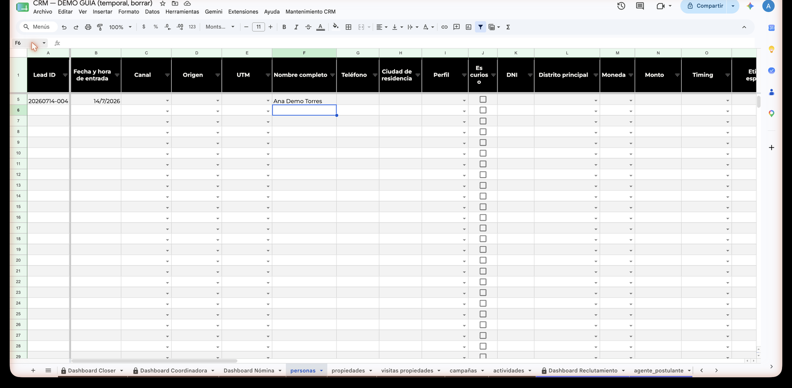
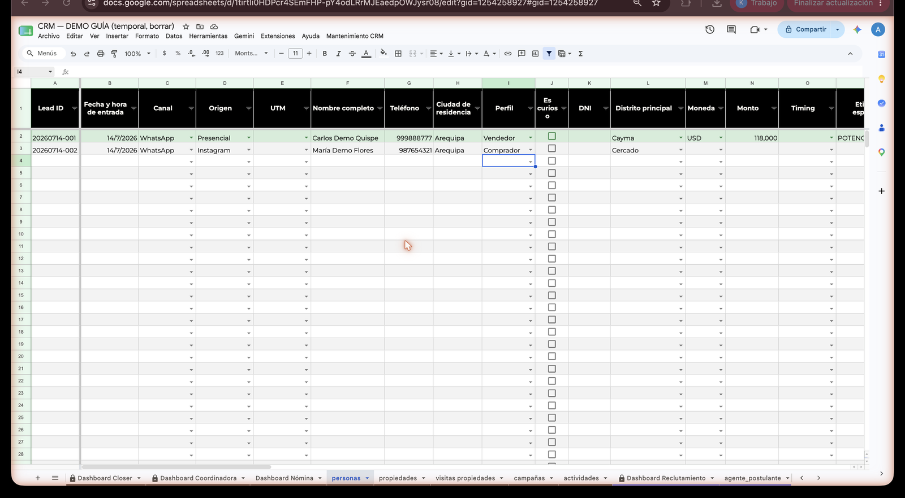
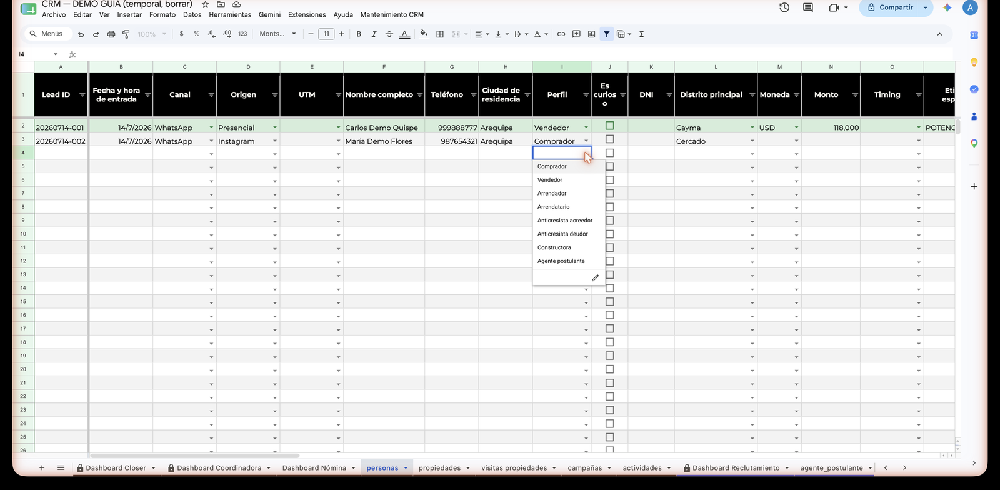
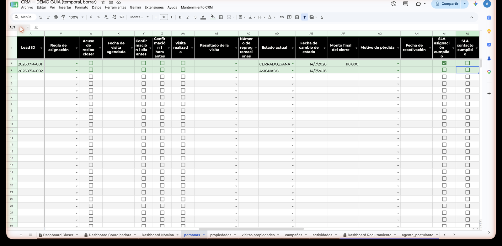
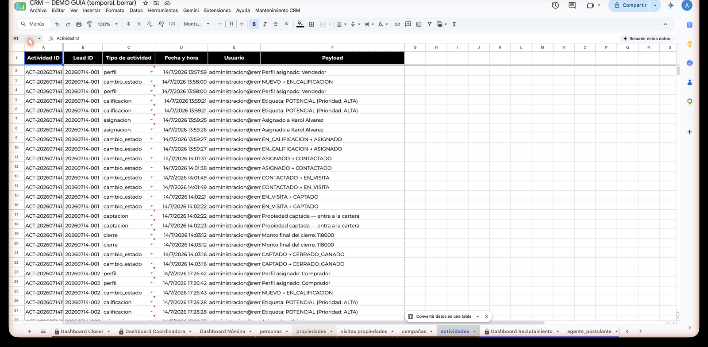
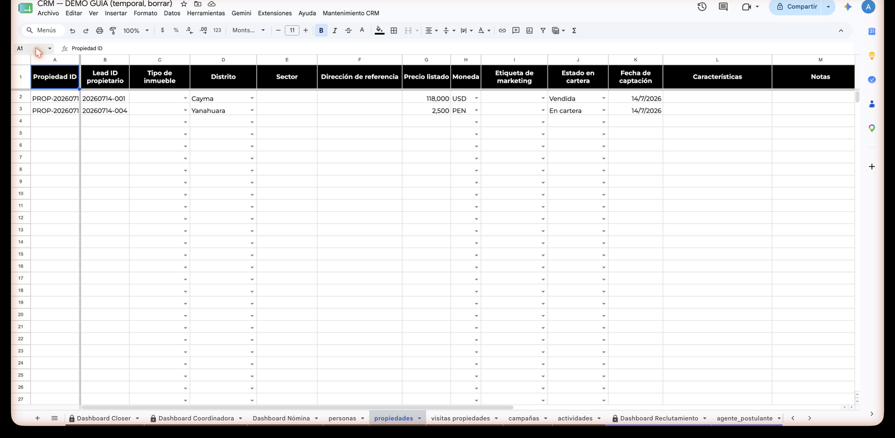
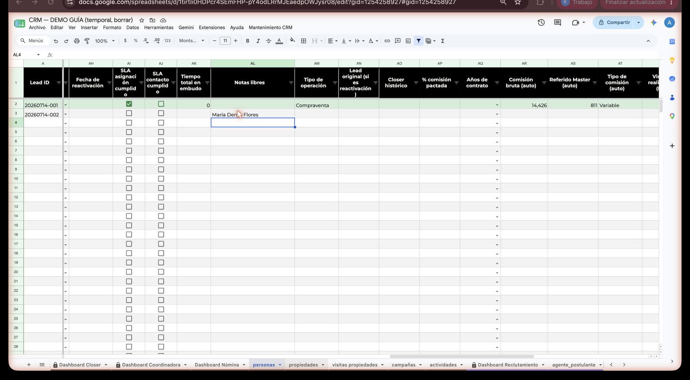
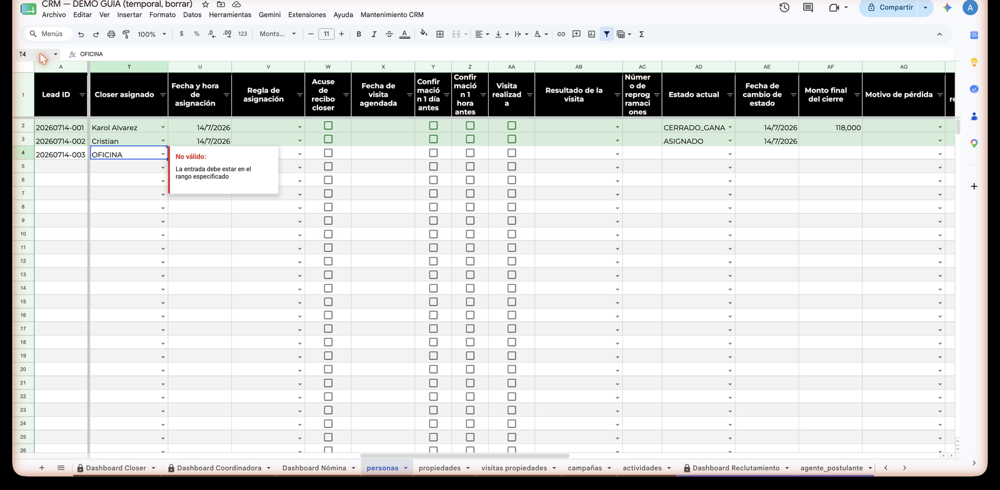

Llenar un lead paso a paso
Esta es la página más importante de la guía. Te lleva de la mano desde que suena el WhatsApp hasta que el cierre queda registrado. En cada paso vas a ver dos cosas: lo que haces tú (qué tecleas y dónde) y lo que el CRM hace solo unos ~10 segundos después.
Todo pasa en la hoja personas 🟢 SE LLENA — un lead por fila, solo las columnas blancas de entrada. Y ojo: el retraso de ~10 segundos entre que tecleas y que el CRM reacciona es normal (es Google, no el CRM). Teclea y espera.
Para el ejemplo vamos a usar a Carlos Demo Quispe, un propietario que quiere vender su casa en Cayma. Es un nombre de práctica — nunca pongas datos inventados en el CRM real.
Llega el lead: escribe el nombre
Anda a la hoja personas y ubica la primera fila vacía (la que sigue después del último lead). En la columna Nombre completo (columna F) escribe el nombre con al menos un apellido: Carlos Demo Quispe. Presiona Enter.

personas.Unos segundos después aparecen solos el Lead ID (columna A, formato YYYYMMDD-NNN), la Fecha y hora de entrada (columna B) y el estado NUEVO. No los toques nunca — el Lead ID es la cédula del lead en todo el sistema.

Completa teléfono, canal y origen
- Teléfono (columna G): 9 dígitos, sin +51. Ejemplo:
999111222. - Canal (columna C): elige del desplegable por dónde llegó — WhatsApp · Llamada · Web · Presencial · Email.
- Origen (columna D): de dónde vino — Facebook · Instagram · TikTok · Web Master · Google Ads · Referido · Presencial · Otros. Si vino de una campaña de pauta, copia también la UTM (columna E), el código que conecta el lead con su campaña.
Si el teléfono ya existe en otra fila, la celda se resalta en naranja. No es un error: es un aviso de posible lead repetido. Si es la misma persona que vuelve, se crea fila nueva y se enlaza con Lead original ID (eso lo vemos en otra página de la guía).
Elige el Perfil
En la columna Perfil (columna I), abre el desplegable y elige qué quiere el lead. Son 8 opciones: Comprador · Vendedor · Arrendador · Arrendatario · Anticresista acreedor · Anticresista deudor · Constructora · Agente postulante. Carlos quiere vender: elegimos Vendedor.

- Crea la fila del lead en la hoja de su perfil (para Carlos: la hoja
vendedor, donde después se marcan sus casillas de documentos). - Filtra el desplegable de Etiqueta específica para mostrarte solo las etiquetas de ese perfil.
- Adapta el desplegable de Closer asignado: si el perfil es propietario te mostrará el equipo Hunter; si es adquirente, el equipo Closer.
- El estado pasa solo de
NUEVOaEN_CALIFICACION.
Clasifica: etiqueta y prioridad
Aplica el flujo de calificación del perfil y llena los datos que recojas: DNI, Distrito principal, Moneda y Monto referencial, Timing. Al terminar, elige la Etiqueta específica (columna P) del desplegable — que ya viene filtrado por el perfil. Para Carlos, que cumple todo el criterio: POTENCIAL.
- Llena la Prioridad común según la etiqueta: ALTA · MEDIA · BAJA · DESCARTE. Para
POTENCIAL: ALTA. No la edites — se calcula sola. - Si la prioridad resulta DESCARTE (o marcaste "Es curioso"), el lead pasa solo a
DESCARTADOy el CRM le pone fecha de reactivación a +45 días.
Asigna: elige en "Closer asignado"
En la columna Closer asignado (columna T), abre el desplegable y elige a la persona que trabajará el lead. El desplegable ya te muestra el equipo correcto: como Carlos es propietario (Vendedor), verás al equipo Hunter; si fuera un comprador o arrendatario, verías al equipo Closer. La meta: asignar en menos de 30 minutos desde que entró el lead.
- Sella la Fecha y hora de asignación.
- Mueve el estado a
ASIGNADO. - Evalúa el SLA de asignación (SLA = compromiso de tiempo de respuesta): queda en verde si asignaste en menos de 30 minutos.

ASIGNADO y SLA, todo solo.El lead avanza: mueve el "Estado actual"
Conforme el lead avanza, cambia el Estado actual (columna AD) desde el desplegable: CONTACTADO cuando hay contacto efectivo, EN_VISITA tras la visita, EN_NEGOCIACION si hay conversación de cierre… Varios de estos saltos también ocurren solos al llenar otras columnas (por ejemplo, al poner la Fecha visita agendada el estado pasa solo a CONTACTADO).
- Valida la transición. El estado se mueve en orden — si intentas un salto no permitido (de
NUEVOaCERRADO_GANADO, por ejemplo), el CRM lo revierte y te avisa el motivo. - Sella la Fecha de cambio de estado.
- Agrega una fila a la hoja
actividades— la bitácora automática. Cada cambio queda registrado con fecha, hora y quién lo hizo. Esa hoja solo se lee, nunca se edita.

actividades, con fecha y hora.Si es propietario y firma: CAPTADO
Cuando un lead propietario (Vendedor, Arrendador, Anticresista deudor o Constructora) firma la exclusividad, cambia su Estado actual a CAPTADO. Nada más — no vayas a crear la propiedad a mano.
La propiedad se crea sola en la hoja propiedades: con su Propiedad ID, el distrito, el precio y la moneda copiados del lead, y Estado en cartera = "En cartera". La casa de Carlos ya está oficialmente en la cartera de la oficina.

CAPTADO y la fila nueva aparece sola en propiedades.¿Y si es un comprador? CAPTADO es solo para propietarios. Si por error se lo pones a un adquirente (Comprador, Arrendatario, Anticresista acreedor), el CRM lo revierte y te avisa.
El cierre: CERRADO_GANADO + monto final
Cuando la operación se concreta, cambia el Estado actual a CERRADO_GANADO y llena el Monto final del cierre (columna AF), en la moneda del lead. Recuerda: todo monto va con su Moneda (PEN o USD) — el sistema convierte a soles solo.
- Calcula la comisión completa: bruta, referido y neta según el caso. Nadie saca calculadora.
- Pasa la propiedad a Estado en cartera = "Vendida".
- Sella el tiempo total del lead en el embudo y alimenta los dashboards del mes.

Dos cosas que el CRM no te va a dejar hacer
⛔ "¿Y si escribo OFICINA?"
Nada de "OFICINA", "x" ni texto libre en Closer asignado. Si lo tecleas, el CRM lo rechaza en seco con un mensaje: solo acepta nombres de la lista de agentes activos. Es la regla que salvó al CRM del caos anterior — todos los leads con dueño de verdad.

⛔ "¿Y si toco una columna gris?"
Las columnas grises son AUTO: las llena el sistema (Lead ID, fechas selladas, SLAs, prioridad, comisiones…). Si escribes encima, el CRM revierte tu cambio y te muestra un aviso pequeño abajo a la derecha explicando el motivo. Léelo — siempre dice qué pasó. Si crees que un dato AUTO está mal, no lo corrijas a mano: avisa a Dirección.
Así se ve el aviso que aparece abajo a la derecha de la hoja durante unos segundos. La celda vuelve sola a su valor correcto.
Chuleta: los 11 estados del lead
Este es el camino completo. Los estados se mueven en orden — el CRM bloquea los saltos inválidos.
La foto final: tú tecleas 8 cosas y el CRM hace el resto — genera el ID, sella las fechas, valida cada paso, crea la propiedad, calcula la comisión y anota todo en la bitácora. Si el CRM revierte algo y te avisa, lee el mensaje: siempre dice el motivo exacto. Y ante la duda, no borres nada — pregunta a Dirección.